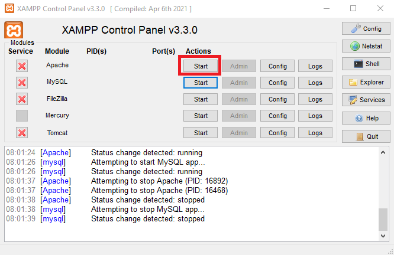
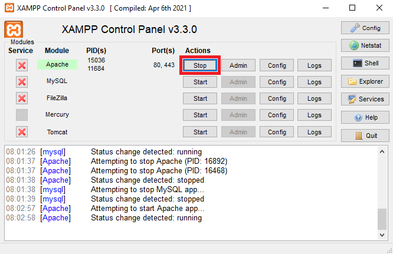
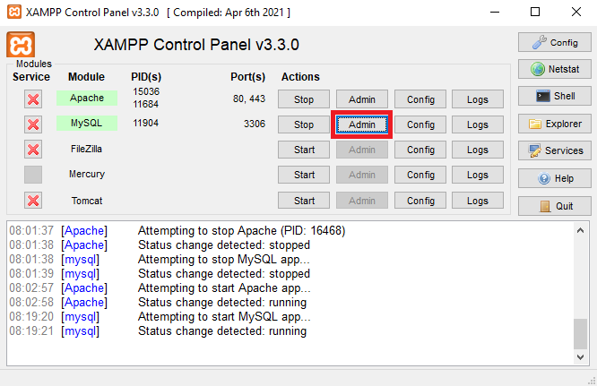
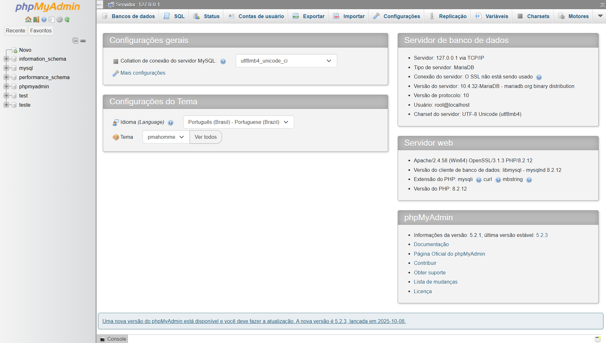
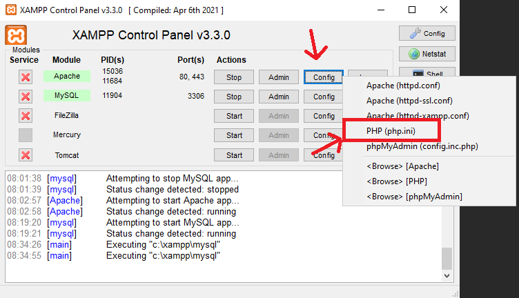
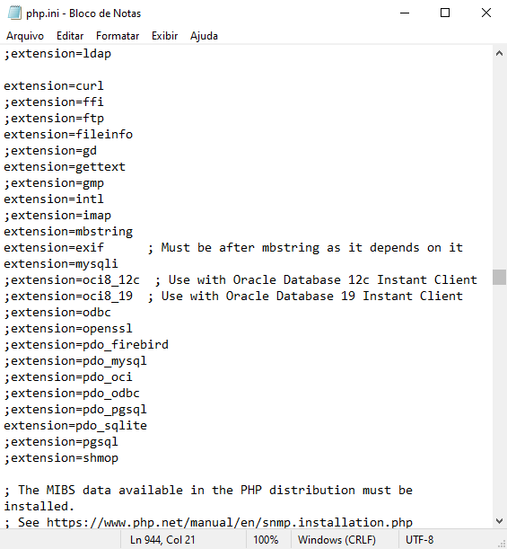
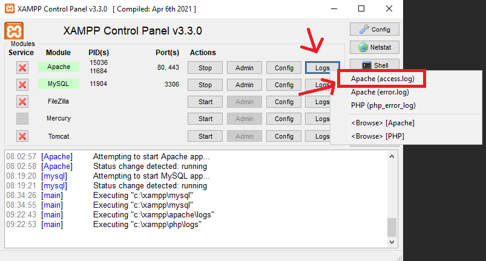
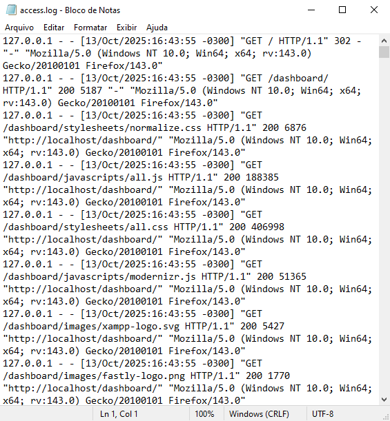

Navegação Rápida
Painel de controle do XAMPP
No painel de controle do XAMPP, você verá uma interface gráfica que permite gerenciar os componentes que foram instalados, como o servidor Apache, o banco de dados MySQL, e outros serviços. Além das configurações do próprio XAMPP.
Funcionalidades Principais:
- Start/Stop: Botões para iniciar ou parar o serviço.
- Admin: Acessa a interface web do serviço. (o serviço necessita estar ligado)
- Config: Edita os arquivos de configuração dos serviços.
- Logs: Visualização de logs de erro e acesso para diagnóstico.
Iniciando e parando serviços:
No painel de controle, você verá botões para iniciar e parar cada componente. Por exemplo, para iniciar o servidor Apache, basta clicar no botão "Start" ao lado de "Apache".
Da mesma forma, você pode parar o serviço clicando no botão "Stop".
Acessando interfaces administrativas:
Muitos componentes do XAMPP possuem interfaces web para administração. Por exemplo, para acessar o phpMyAdmin (ferramenta de gerenciamento de banco de dados), clique no botão "Admin".
Isso abrirá o phpMyAdmin em seu navegador padrão, onde você pode gerenciar seus bancos de dados MySQL.
Acessando configurações:
Existe também a possibildade de ajustar as configurações de um componente. Por exemplo, para acessar as configurações do php clique no botão "Config" ao lado do serviço apache.
Isso abrirá o arquivo de configuração correspondente em um editor de texto, onde você pode fazer as alterações necessárias.
Lembre-se de salvar as alterações e reiniciar o serviço para que as novas configurações entrem em vigor.
Acessando logs:
Para diagnosticar problemas, você pode acessar os logs de cada componente clicando no botão "Logs". Isso abrirá uma janela exibindo os logs de erro e acesso, o que pode ser útil para solucionar problemas. Por exemplo, para acessar os logs de acesso do apache clique no botão "Logs" ao lado do serviço apache.
Isso abrirá o arquivo de log correspondente em um editor de texto, onde você pode revisar as entradas de log.
O painel de controle do XAMPP permite ajustar várias configurações, como portas de serviço, diretórios raiz, e outras opções avançadas.
Funcionalidades Extras:
- Configurações Avançadas: Ajuste portas, diretórios raiz, e outras opções.
- Serviços Adicionais: Gerencie serviços como FileZilla FTP Server, Mercury Mail Server, etc.
- Atualizações: Verifique e instale atualizações do XAMPP diretamente pelo painel.
Instalação e Configuração
O XAMPP é um ambiente de desenvolvimento gratuito e de código aberto que facilita a criação e o teste de aplicações web localmente, sem a necessidade de um servidor real na internet. Ele reúne em um só instalador todos os componentes necessários para executar um servidor web completo em seu computador, sem precisar de configuração complexa.
Instalação e Configuração
O XAMPP é um ambiente de desenvolvimento gratuito e de código aberto que facilita a criação e o teste de aplicações web localmente, sem a necessidade de um servidor real na internet. Ele reúne em um só instalador todos os componentes necessários para executar um servidor web completo em seu computador, sem precisar de configuração complexa.
Instalação e Configuração
O XAMPP é um ambiente de desenvolvimento gratuito e de código aberto que facilita a criação e o teste de aplicações web localmente, sem a necessidade de um servidor real na internet. Ele reúne em um só instalador todos os componentes necessários para executar um servidor web completo em seu computador, sem precisar de configuração complexa.
Instalação e Configuração
O XAMPP é um ambiente de desenvolvimento gratuito e de código aberto que facilita a criação e o teste de aplicações web localmente, sem a necessidade de um servidor real na internet. Ele reúne em um só instalador todos os componentes necessários para executar um servidor web completo em seu computador, sem precisar de configuração complexa.
Instalação e Configuração
O XAMPP é um ambiente de desenvolvimento gratuito e de código aberto que facilita a criação e o teste de aplicações web localmente, sem a necessidade de um servidor real na internet. Ele reúne em um só instalador todos os componentes necessários para executar um servidor web completo em seu computador, sem precisar de configuração complexa.